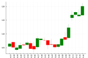

Plotting
TimeSeries defines a recipe that allows plotting to a number of different plotting packages using the Plots.jl framework (no plotting packages will be automatically installed by TimeSeries).
Here we use the data from Yahoo Fiance as a demo.
using Plots, MarketData, TimeSeries
gr()
ta = yahoo(:GOOG, YahooOpt(period1 = now() - Month(1)))22×6 TimeArray{Float64,2,Date,Array{Float64,2}} 2021-08-30 to 2021-09-29
│ │ Open │ High │ Low │ Close │ AdjClose │
├────────────┼───────────┼───────────┼───────────┼───────────┼───────────┤
│ 2021-08-30 │ 2894.0901 │ 2929.79 │ 2892.0 │ 2909.3899 │ 2909.3899 │
│ 2021-08-31 │ 2917.6899 │ 2922.24 │ 2900.0 │ 2909.24 │ 2909.24 │
│ 2021-09-01 │ 2913.0 │ 2936.4099 │ 2912.29 │ 2916.8401 │ 2916.8401 │
│ 2021-09-02 │ 2918.99 │ 2926.5 │ 2882.1299 │ 2884.3799 │ 2884.3799 │
│ 2021-09-03 │ 2882.9199 │ 2907.54 │ 2870.1001 │ 2895.5 │ 2895.5 │
│ 2021-09-07 │ 2894.99 │ 2916.48 │ 2890.8201 │ 2910.3799 │ 2910.3799 │
│ 2021-09-08 │ 2907.8701 │ 2911.02 │ 2884.0 │ 2897.6699 │ 2897.6699 │
│ 2021-09-09 │ 2897.6699 │ 2913.3899 │ 2888.6799 │ 2898.27 │ 2898.27 │
│ ⋮ │ ⋮ │ ⋮ │ ⋮ │ ⋮ │ ⋮ │
│ 2021-09-21 │ 2802.3401 │ 2816.2319 │ 2778.1101 │ 2792.9299 │ 2792.9299 │
│ 2021-09-22 │ 2801.01 │ 2831.6699 │ 2789.4351 │ 2818.77 │ 2818.77 │
│ 2021-09-23 │ 2832.1899 │ 2845.0491 │ 2821.9299 │ 2836.53 │ 2836.53 │
│ 2021-09-24 │ 2818.9199 │ 2858.0701 │ 2817.01 │ 2852.6599 │ 2852.6599 │
│ 2021-09-27 │ 2831.71 │ 2850.0 │ 2810.0 │ 2830.02 │ 2830.02 │
│ 2021-09-28 │ 2781.77 │ 2792.1299 │ 2714.0 │ 2723.6799 │ 2723.6799 │
│ 2021-09-29 │ 2742.1941 │ 2747.97 │ 2685.0 │ 2690.4199 │ 2690.4199 │Plotting as multiple series
The recipe allows TimeArray objects to be passed as input to plot. The recipe will plot each variable as an individual line, aligning all variables to the same y axis. backend).
plot(ta[:Open, :High, :Low, :Close])
Plotting candlestick
We have seriestype = :candlestick support that requires four columns exist in the input. They are open, high, low and close (case-insensitive).
plot(ta, seriestype = :candlestick)┌ Warning: Keyword argument hover not supported with Plots.GRBackend(). Choose from: Set([:top_margin, :group, :background_color, :yforeground_color_text, :yguidefontcolor, :seriesalpha, :legendfontcolor, :seriescolor, :ztick_direction, :zlims, :overwrite_figure, :xguidefonthalign, :normalize, :linestyle, :colorbar_titlefontvalign, :xflip, :fillcolor, :ygrid, :background_color_inside, :zguidefonthalign, :bins, :yscale, :xtickfontcolor, :xguide, :fillalpha, :tick_direction, :yguidefontsize, :legendfontfamily, :foreground_color, :xtickfonthalign, :x, :ytickfontrotation, :legend, :discrete_values, :ytick_direction, :xguidefontrotation, :ribbon, :tickfontrotation, :xdiscrete_values, :legendtitle, :xgridstyle, :orientation, :gridstyle, :markersize, :camera, :xforeground_color_grid, :quiver, :zticks, :markerstrokecolor, :ztickfontrotation, :ztickfonthalign, :legendfonthalign, :xtickfontsize, :levels, :zgridstyle, :foreground_color_border, :zguidefontvalign, :marker_z, :markerstrokealpha, :markeralpha, :tickfontvalign, :zguidefontcolor, :ygridlinewidth, :zlink, :zscale, :smooth, :xticks, :zguidefontsize, :y, :margin, :ytickfontcolor, :yforeground_color_border, :zguidefontfamily, :zgridalpha, :yguidefontvalign, :yguidefonthalign, :ztickfontcolor, :html_output_format, :tickfontcolor, :titlefontrotation, :legendfontvalign, :tickfontsize, :z, :yforeground_color_axis, :xtickfontrotation, :xerror, :contour_labels, :xguidefontcolor, :primary, :guidefonthalign, :aspect_ratio, :link, :colorbar_title, :yguide, :guidefontvalign, :yguidefontfamily, :layout, :polar, :right_margin, :xlink, :series_annotations, :inset_subplots, :ytickfontsize, :tickfontfamily, :show_empty_bins, :xgrid, :ygridalpha, :xtick_direction, :colorbar, :zflip, :ticks, :legendfontrotation, :linealpha, :arrow, :colorbar_titlefonthalign, :xtickfontvalign, :zgrid, :bar_width, :zguide, :zforeground_color_text, :weights, :xgridalpha, :ygridstyle, :fill_z, :ztickfontfamily, :markershape, :background_color_subplot, :xguidefontvalign, :markerstrokewidth, :xguidefontfamily, :gridlinewidth, :foreground_color_subplot, :xgridlinewidth, :foreground_color_text, :titlefonthalign, :yerror, :zgridlinewidth, :grid, :xguidefontsize, :xforeground_color_axis, :background_color_outside, :titlefontcolor, :line_z, :size, :projection, :zguidefontrotation, :ydiscrete_values, :seriestype, :yflip, :fillrange, :ztickfontvalign, :xlims, :xforeground_color_border, :markercolor, :ylink, :yforeground_color_grid, :color_palette, :connections, :colorbar_titlefontrotation, :lims, :xscale, :left_margin, :annotations, :window_title, :foreground_color_axis, :colorbar_titlefontfamily, :yguidefontrotation, :guidefontsize, :zdiscrete_values, :tickfonthalign, :bottom_margin, :framestyle, :zerror, :scale, :zforeground_color_border, :background_color_legend, :linecolor, :foreground_color_legend, :title, :subplot_index, :flip, :titlefontvalign, :foreground_color_grid, :linewidth, :ztickfontsize, :gridalpha, :guidefontfamily, :ylims, :xtickfontfamily, :colorbar_titlefontcolor, :ytickfontvalign, :ytickfontfamily, :xforeground_color_text, :show, :guidefontrotation, :legendfontsize, :subplot, :label, :ytickfonthalign, :guide, :colorbar_titlefontsize, :guidefontcolor, :titlefontsize, :titlefontfamily, :zforeground_color_axis, :zforeground_color_grid, :colorbar_entry, :yticks])
└ @ Plots ~/.julia/packages/Plots/yfzIY/src/args.jl:1591
Other available attributes
bar_width::Float64the valid value is from0to1.
plot(ta, seriestype = :candlestick, bar_width = 0.7)
xticks::Intfor controlling the density of x axis labels.
plot(ta, seriestype = :candlestick, xticks = 3, xrotation = 60)